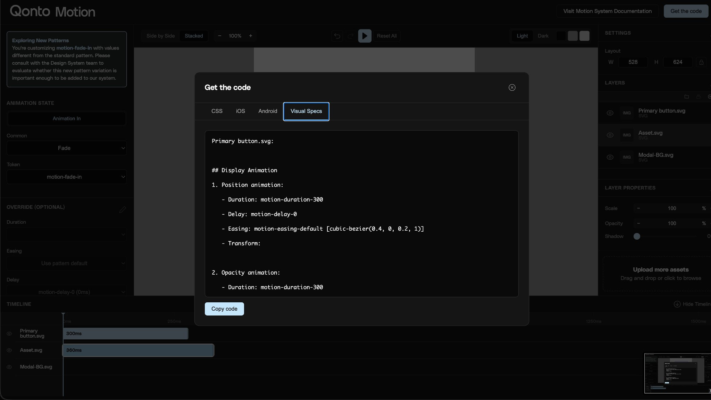
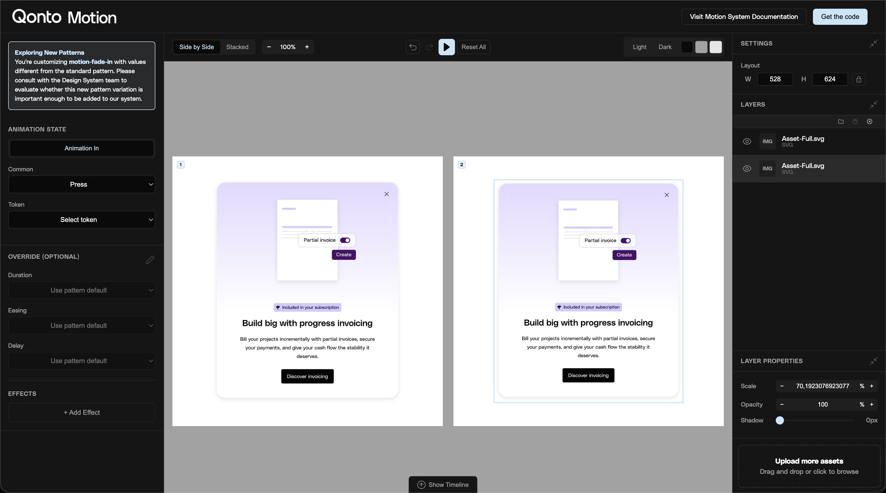
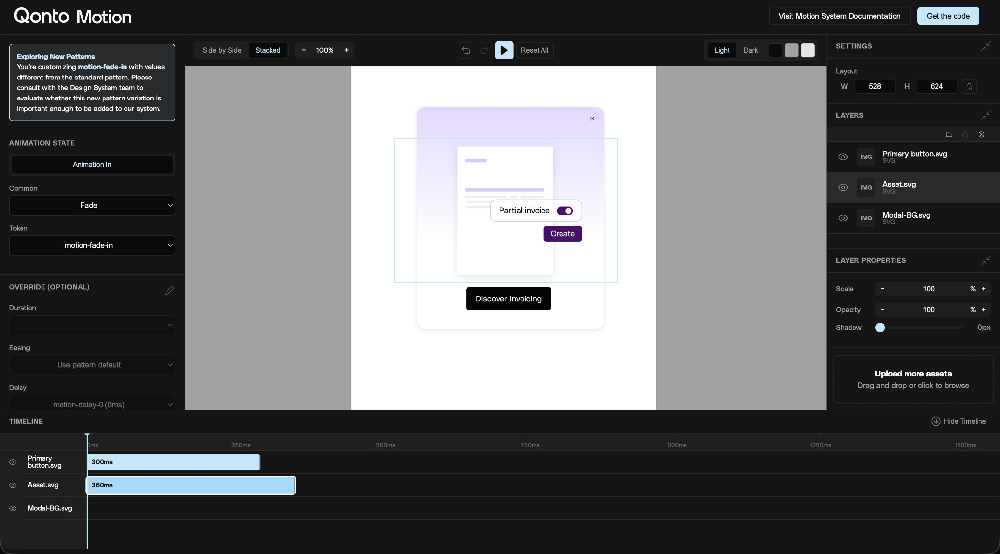

Internal tool to preview motion tokens on product designs. Upload Figma frames, apply tokens, see results instantly. Made the motion system accessible to everyone.
After building Qonto's motion system, I built an internal tool to preview motion tokens on real product designs—modals, buttons, transitions. Apply tokens, see results instantly.
Internal tool to preview motion tokens on product designs. Upload Figma frames, apply tokens, see results instantly. Made the motion system accessible to everyone.
Motion tokens existed but no one could see them in action without building prototypes or shipping code. Designers used arbitrary values. Engineers asked which easing to use.
Library of all tokens with live previews. Select a token, see it animate. Designers feel the difference. Engineers get exact names.
Build motion, get code for iOS, Android, CSS, and visual specs

Product templates for modals, sheets, toasts. Upload Figma frames, apply tokens, see results instantly.
Upload an asset and compare different motion tokens side-by-side

Advanced timeline mode for complex sequences. Layer animations, adjust delays, preview stagger patterns. Every value a token.
Build staggered animations with full timeline control

Fully functional tool. Explore tokens, upload designs, see the system in action.
I created Cursor AI templates and guidelines so anyone at Qonto could build production-ready internal tools. The Motion Tokens Inspector became the team's shared resource—designers preview independently, engineers get exact values.
Motion went from bottleneck to shared capability. Designers apply tokens independently. Engineers self-serve values. The tool made the system accessible and usable.